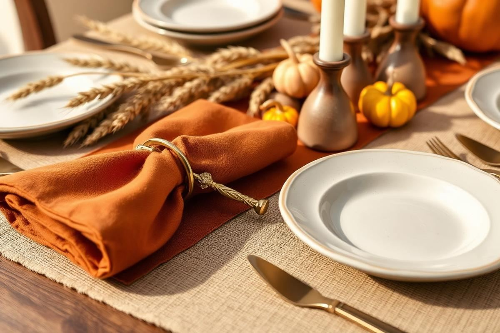

Thanksgiving Table Setting: A Foolproof Formula

Thanksgiving Table Setting: A Foolproof Formula is one of those topics where a little planning goes a long way. In this guide I walk through the process we use in real homes — not just what looks good in a photo, but what actually holds up over time.
Start here
Before you buy or move anything, measure the space and note how you actually use it. The best-looking room is one that matches how you live, so start with the routines: where you sit, where you drop keys, where the light falls in the afternoon.
The essentials
Focus on the pieces that do the most work. Get those right and the rest of the room comes together with much less effort. Aim for materials that patina rather than degrade, and colors you will still like in five years.
- Choose one clear focal point per room.
- Pick materials that improve with age.
- Layer textures instead of adding more colors.
- Leave visual breathing room — negative space is a design element.
Common mistakes
The mistakes we see most often are matching everything too tightly, over-scaling accessories, and skipping proper lighting. Fix those three and most rooms improve overnight.

Elevated Centerpieces: Beyond the Cornucopia
For a truly memorable Thanksgiving table, move beyond the predictable cornucopia. An elevated centerpiece acts as the focal point, setting the entire tone. Consider an asymmetrical arrangement of seasonal elements. Instead of a single large vase, use three varying heights of clear glass hurricanes or bud vases (e.g., 6-inch, 9-inch, 12-inch). Fill them with a mix of earthy textures: seeded eucalyptus, miniature white pumpkins (like 'Baby Boo' variety, typically $3-5 each), bittersweet branches, and perhaps a few dried artichoke heads. For added warmth and sparkle without obstructing conversation, weave a delicate string of battery-operated fairy lights (about $10-15 for a 6-foot strand) around the base of the vases. Ensure the tallest element doesn't exceed 12-15 inches above the tabletop to maintain clear sightlines for guests. Avoid overly fragrant flowers like lilies, which can interfere with the meal's aromas.
Material Spotlight: Velvet and Brass
To introduce a touch of luxury, incorporate velvet ribbons ($5-8 per roll) draped casually or tied around napkin rings, and small polished brass candle holders ($15-25 each for a modest size) at varying heights. These materials add visual weight and a sophisticated sheen, reflecting the warm glow of candlelight beautifully.
Lighting the Mood: The Illuminating Details
Lighting is paramount to creating an inviting holiday atmosphere. Overhead lighting should be dimmed significantly, allowing candles to take center stage. For a standard 6-8 person dining table (approx. 72-96 inches long), aim for at least 5-7 distinct light sources. Taper candles in substantial candle holders, spaced roughly every 18-24 inches, provide elegant vertical light. Opt for unscented, dripless tapers (10-12 inches tall, $1-2 each) in a warm ivory or cream to prevent wax mishaps and conflicting scents. Supplement these with votives or tealights ($0.50-$1 each) in frosted or mercury glass holders, strategically placed between plates or nestled within your centerpiece. These lower-level lights create a softer, more intimate glow. If you have a chandelier above the table, ensure it's on a dimmer and set to a very low, warm level. String lights within the centerpiece or along the buffet complement the candle glow.
- Always use a non-flammable base under candles, especially tapers.
- Consider rechargeable LED candles for safety if children or pets are present, though real flame offers an unmatched ambiance.
- Test your lighting scheme in advance, ideally at the time of day you'll be dining.
Personalized Touches: Making Guests Feel Valued
Thoughtful, personalized touches transform a beautiful table into a truly memorable experience. Hand-lettered place cards, for example, demonstrate care. Instead of generic cardstock, consider using small polished river rocks, a dried bay leaf, or a miniature pinecone as the base for each guest's name. A metallic gold or silver paint pen (about $4-6) against a natural element creates a sophisticated, rustic feel. For a small favor, a single artisanal chocolate truffle or a small sprig of rosemary tied with a velvet ribbon can be placed on each plate. If you have heirlooms like antique salt cellars or small silver forks, assign one to each place setting for a touch of unexpected charm and history. These small, often inexpensive details communicate genuine hospitality and make each guest feel specifically welcomed, fostering a deeper sense of connection around the holiday table. A subtle menu printed on elegant cardstock can also serve as a keepsake.
The Napkin Ring Revival
Move beyond plain napkin folds. Invest in unique napkin rings that complement your theme – think natural wood, brass leaves, or even simple twine with a small personalized tag. A set of six unique napkin rings can range from $25 to $75, a worthwhile investment for recurring holiday use.
Linens and Layers: Texture and Depth
The foundation of any elegant table setting lies in its linens. A well-chosen tablecloth anchors the entire design. For Thanksgiving, consider a substantial linen or cotton blend tablecloth ($50-150 depending on size and quality) in a neutral like ivory, natural flax, or a deep jewel tone such as forest green or burgundy. The key is layering. A runner, placed either down the center of the table or across the width to delineate place settings, adds textural interest. This could be a contrasting color, a different material like burlap or velvet, or even a woven pattern. Don't underestimate the power of cloth napkins. Large (20x20 inch) linen or cotton napkins ($5-15 each) feel luxurious and provide a generous drape when folded. Consider a simple, elegant fold like a basic rectangle or an envelope fold to allow other elements like napkin rings or place cards to shine. The layers of fabric create depth and a plush, inviting feel that paper products simply cannot replicate.
Runner Length: The 'Kiss' Rule
A runner should 'kiss' the ends of the table, ideally extending no more than 6-8 inches beyond the table edge on either side. Too short looks skimpy; too long can impede seating. For a 72-inch table, a 90-inch runner works well.
Tableware Selection: Balancing Function and Form
Your choice of dinnerware significantly impacts the table's overall aesthetic. For Thanksgiving, a mix-and-match approach often yields the most character. Instead of a perfectly uniform set, consider combining heirloom china passed down through generations with more contemporary stoneware. This creates a tablescape that feels rich with history yet still current. For example, a formal porcelain dinner plate could be topped with a more rustic, hand-glazed salad plate. This layering of styles and textures adds visual interest and prevents the table from feeling too 'staged.' Be practical: ensure all plates are large enough to comfortably hold a holiday portion without looking crowded. A standard dinner plate is typically 10.5-11 inches in diameter. Cutlery should be polished and complete: dinner fork, salad fork, dinner knife, soup spoon (if soup is served), and dessert spoon. A full set of 12 for these essentials can be an investment, but worth it for holiday hosting.
Glassware Considerations: Beyond Basic Water
Offer at least two types of glassware per person: a water glass and a wine glass (or another beverage glass). Don't just pull out the everyday tumblers. Elevated choices like etched crystal or colored glass water goblets ($10-30 each) can add significant sparkle and sophistication. Ensure enough clearance between glasses, typically 2-3 inches, to avoid overcrowding.
Last-Minute Polish: The Unsung Details
On Thanksgiving Day, when the turkey is resting and guests are about to arrive, a final sweep for small details can make all the difference. Check that all candles are lit and burning evenly. Ensure water pitchers are full and readily accessible on the table or a nearby buffet. A small bowl of sea salt flakes ($8-12 for a good quality tub) and a freshly ground pepper mill at each end of the table provide guests with personalized seasoning options. Have a small, elegant waste bowl for breadcrumbs or olive pits easily accessible but discreetly placed. Most importantly, pause and take a long look at your table from a guest's perspective. Are place settings aligned? Are chairs pulled out evenly? Is there enough elbow room (ideally 24-30 inches per guest)? These minute details, often overlooked in the rush, contribute immensely to the overall sense of ease and luxury for your guests. A subtle, comforting background music playlist can also elevate the atmosphere without being intrusive.
- Before guests arrive, mist the room lightly with a subtle, warm-scented room spray (e.g., cinnamon, vanilla, amber) to reinforce the holiday aroma.
- Place a small, easily accessible corkscrew and bottle opener near the wine glasses.
- Have spare cloth napkins on hand for spills – an often-forgotten, but crucial, detail.
Key takeaways
- Match the room to how you actually live.
- Anchor with one main piece and clear lighting.
- Layer textures, not colors.
- Leave breathing room around every object.
Frequently asked questions
Where should I start?
Start with the largest piece and the light. Everything else — art, textiles, small objects — is easier to place once those two anchors are set.
What is a realistic budget?
Prioritize the pieces you touch every day. Spend more on those and less on decorative items, which are easy to swap over time.
How long should this last?
A well-chosen main piece should last 10–15 years. Refreshes come through textiles, art, and accessories, not full replacements.

Sophia Bennett is a certified interior stylist and the senior editor at Styleire. She has spent more than eight years helping homeowners and renters create warm, functional interiors, with hands-on experience across small city apartments and family homes. Her work has been informed by close collaboration with independent designers, craftspeople, and product testers.
View full profile →Related reading

Fall Home Decor Guide: Warm Up the House Without Clutter
Great fall decor is a shift in temperature, not a shopping trip. Here is how to make the change with what you already own.

Christmas Decorating Guide: Cozy, Not Cluttered
Christmas Decorating Guide: Cozy, Not Cluttered — a clear, editor-tested guide covering the essentials without the filler.

Halloween Home Decor: The Elegant Approach
Halloween Home Decor: The Elegant Approach — a clear, editor-tested guide covering the essentials without the filler.